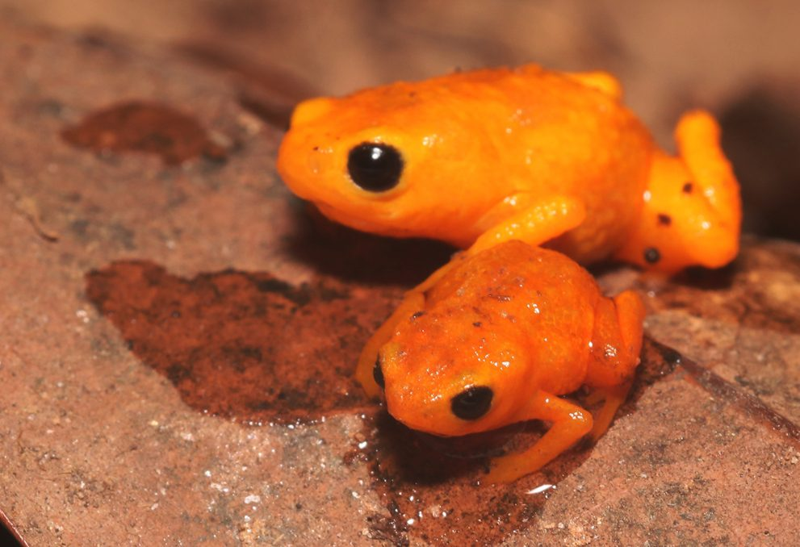
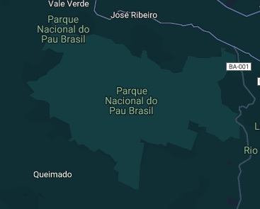

¿Qué Puedes Encontrar Aquí?
En nuestra página, descubrirás:
Información sobre la rana Brachycephalus. Artículos sobre sus hábitos alimenticios y reproductivos. Imágenes y videos que muestran sus encantos y deficientes maneras de saltar
La Importancia de la Conservación
La Mata Atlántica, el hogar de las ranas Brachycephalus, enfrenta serias amenazas debido a la deforestación y la expansión urbana. Por eso, es crucial que aprendamos más sobre estas ranas y trabajemos para proteger su hábitat. En Mundo Brachycephalus, estamos comprometidos con la concienciación y la educación sobre la importancia de conservar este ecosistema único.
Buscas conocer más?
Te invitamos a explorar el sitio. No olvides ver la seccion de contacto para obtener unformacion de como ser parte de la comunidad
Tambien te invitamos a revisar los siguientes enlaces para mas informacion: